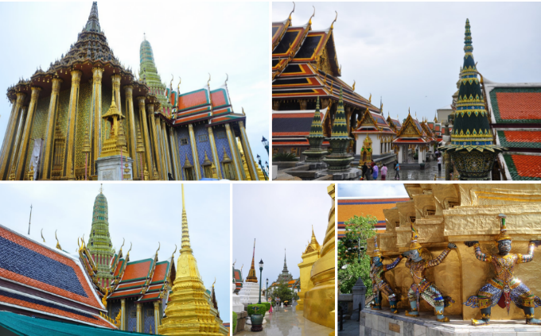
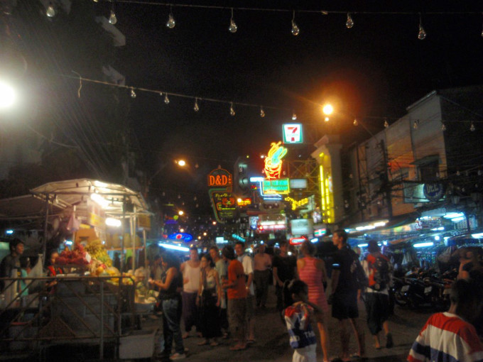
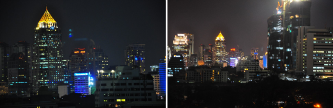
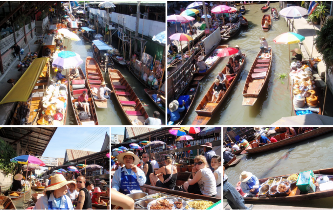

방콕여행에서 꼭 방문해야하는 방콕 명소 BEST 5

방콕 Best 1 - 왕궁 (Grand Palace)
방콕여행시 빼놓을 수 없는 여행지가 바로 왕궁이죠! 방콕여행에 메카!!!
진짜 화려함의 극치이자 진짜 이국적인 느낌을 물씬 풍기는 곳입니다!
방콕여행을 하는 관광객들이 방콕을 방문하면 꼭 가는 곳으로
진짜 많은 관광객이 방문하다보니까 사기도 많이 흥행합니다.
호객행위를 하는 사람이 그럴듯한 말을 붙여가면서 공휴일이라 왕궁문안연다.
다른데 방문하는게 좋다 내가 가자는데 가자~이라면서 사기도 있지만,
실제로 왕궁이 문을 닫는 경우도 있으니 꼭 호텔을 나서기전 재확인하고 방문하세요~?
방문할땐, 무조건 반바지는 불가하여서 옷을 대여해야할수도 있으니 꼭 긴바지 혹은 긴치마를 입고 방문해주세요~:)

방콕 Best 2 - 카오산로드 (Khaosan Road)
진짜 열기가 넘치는 이곳은 정말 핫!!하테하테?합니다~
낮에도 밤에도 항상 사람들이 넘치고 자유로운 분위기와 함께
동남아 특유의 분위기가 잘 어우려져 진짜 여행을 왔다는 것을 실감나게 해주는 곳입니다!
파타이 혹은 꼬치, 벌레튀김, 과일, 다양한 길거리 음식들과 함께,
다양한 노점상부터 레스토랑 등 상점들이 즐비한 거리입니다!!
특히, 카오산 로드를 근방으로 호스텔이나 저렴한 숙소들도 많고 왕궁과 근처에 있어서
많은 분들이 1박이나 2박일정으로 들려가실때, 왕궁방문목적이 있다면 위치적으로 좋은 곳입니다.
방콕 Best 3 - 아유따야 데이투어 (Ayutthaya Day Tour)
방콕은 데이투어 혹은 하프데이 투어가 잘 되어 있습니다.
방콕투어중에 알차고 평이 좋은 투어중 하나가 바로 아유따야 데이 투어인데,
아유따야 지역뿐만아니라 방파인 궁까지 모두 둘러보는 일정인데,
합리적인 가격에 알찬 볼거리를 제공합니다.
역사에 대해 자세히 알지 않아도 고대문명을 보는 느낌으로 참 볼거리가 많고
알찬 투어중에 하나로 목이 분리된 불상들과 시간의 흔적이 깊게 느껴지는
멋진 곳이라서 개인적으로 시간적 여유가 있다면 추천하는 투어중에 하나입니다!!:)

방콕 Best 4 - 시내 씨암
방콕 시내 중심 이 바로 싸얌인데, 볼거리 보다는 쇼핑하고 고급 바
혹은 호텔을 즐기기 좋은 곳으로 한번쯤 들리기 좋은 곳입니다!
방콕에서 쑈핑을 목적으로 하신다면 빼 놓을 수 없는 곳으로 몰들과
고급 브랜드 호텔들이 밀집하여있는 곳이에요~

방콕 Best 5 - 담넘사두억 수상시장 (Damnoen Saduak Market)
투어를 통해 방문할 수 있는 곳인데, 차를 타고 2시간 정도 걸리는 곳으로 반나절정도안에
체험할 수 있는 방콕 전통수상시장으로 태국 전통 분위기를 물씬 느낄 수 있습니다!
이국 적이면서 구경하는 재미와 주전부리를 사서 군것질 하기 좋은 곳입니다.!
해당 글은 위드블로그를 통해 'RAyA'님께서 작성해주신 여행기입니다.
놀거리 , 먹거리, 볼거리가 많은 동남아 방콕으로 여행을 떠나보자.
PC버전: http://goo.gl/mG07da
모바일버전: http://goo.gl/KpPJnL